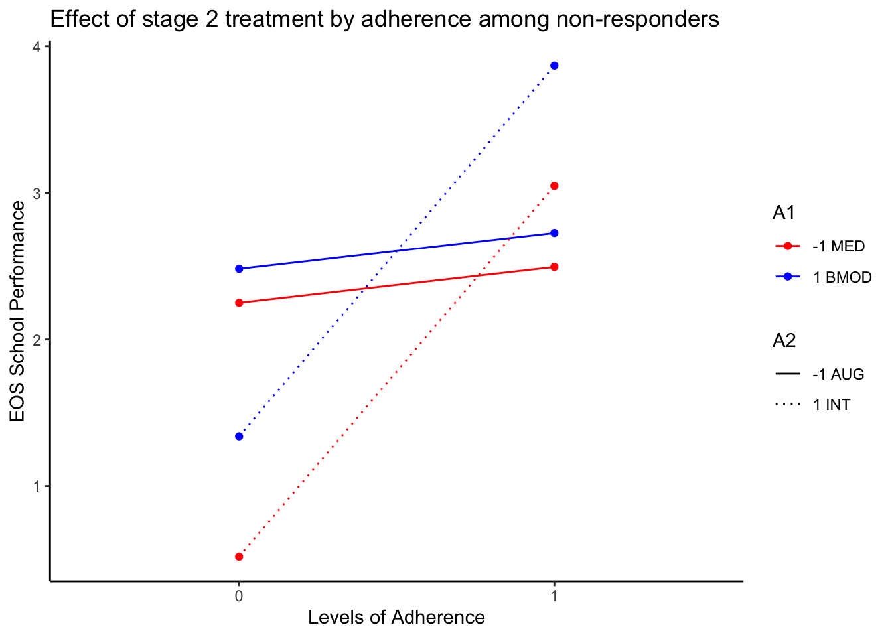
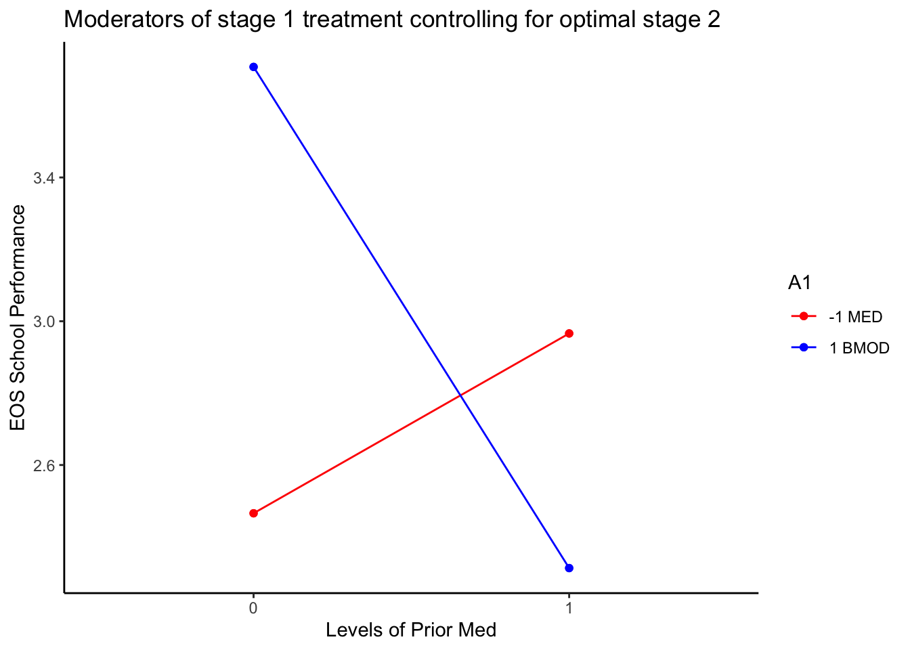

library(CATIE2023)
library(geepack)
library(tidyverse)
library(emmeans)Q-learning Demo
Q-learning Demo using ADHD data
This file provides example R code to analyze *simulated* data that was generated to mimic data arising from the ADHD SMART study (PI: William Pelham). An accompanying handout (“ADHD Handout.pdf”) describes the variables in the data.
Setup
Load data
adhd <- CATIE2023::adhd
# Fill NA with zero
adhd[is.na(adhd)] <- 0
# Grand mean center all covariates
adhd.c <- adhd %>% mutate(across(c(odd, severity, priormed, race, adherence, NRtime), ~ .x - mean(.x, na.rm = TRUE), .names = "{.col}.c"), )
# Filter to non-responders, then center among non-responders
adhd.nr.c <- adhd %>% filter(R == 0) %>%
mutate(across(.cols = c(2:5, NRtime, adherence), ~ .x - mean(.x), .names = "{.col}.c"))Examine moderators of second-stage treatment effect
Remember that Step 1 of Q-learning is to understand how intermediate outcomes can be used to make second-stage decisions about intensifying vs. augmenting. Investigating potential moderators in this way will help us tailor the second-stage intervention for non-responders based on the status of the participants up to the point of non-response. We are only able to investigate non-responders since those were the only individuals who were re-randomized. Because all responders in this study continued on their first-stage intervention, we are unable to assess whether a different tactic would be better for some responders.
We’ll start by fitting a moderated regression model using the data from non-responders. The goal is to discover if we can use the initial treatment a1 and adherence to initial treatment adherence to select a tactic for non-responders, adjusting for baseline covariates. The model is as follows:
\[ \begin{gather} E[Y \mid \mathbf{X}, A_1, adherence, A_2, R = 0] = \beta_0 + \beta_1 odd_{cnr} + \beta_2 severity_{cnr} + \beta_3 priormed_{cnr} + \beta_4 race_{cnr} \\+ \beta_5 A_{1} + \beta_6 adherence + \beta_7 A_2 + \beta_8 (A_2 \times A_1) + \beta_{9} (A_2 \times adherence) \end{gather}\]
Pay particular attention to \(\beta_5\), \(\beta_6\), \(\beta_8\), and \(\beta_{9}\), as these represent the main effects and interactions (with second-stage intervention), respectively, of the two moderators we are interested in for this analysis. Let’s fit the model:
Fit model to the subset of non-responders
# Use the data set that mean centers among non responders, this gives main effects
model2s <- adhd.nr.c %>%geepack::geeglm(Y2 ~ odd.c + severity.c + priormed.c
+ race.c + adherence + A1*A2 +
A2:adherence, id = ID, data = .)
summary(model2s)
Call:
geepack::geeglm(formula = Y2 ~ odd.c + severity.c + priormed.c +
race.c + adherence + A1 * A2 + A2:adherence, data = ., id = ID)
Coefficients:
Estimate Std.err Wald Pr(>|W|)
(Intercept) 2.2079 0.2098 110.759 < 2e-16 ***
odd.c -0.5883 0.3219 3.339 0.0676 .
severity.c -0.9569 0.1990 23.123 1.52e-06 ***
priormed.c -0.4704 0.4415 1.135 0.2867
race.c 0.2232 0.3684 0.367 0.5447
adherence 0.4698 0.3306 2.020 0.1552
A1 0.3478 0.1700 4.188 0.0407 *
A2 -1.0004 0.2078 23.168 1.48e-06 ***
A1:A2 -0.1343 0.1624 0.683 0.4085
adherence:A2 1.6583 0.3315 25.029 5.65e-07 ***
---
Signif. codes: 0 '***' 0.001 '**' 0.01 '*' 0.05 '.' 0.1 ' ' 1
Correlation structure = independence
Estimated Scale Parameters:
Estimate Std.err
(Intercept) 2.724 0.4059
Number of clusters: 101 Maximum cluster size: 1 Here we find that adherence is a significant moderator of stage 2 treatment \(A_2\), but \(A_1\) is not. The sign on \(\beta_9\) is positive, suggesting that those that are adherent would benefit from intensifying treatment (\(A_2 = 1\)). Likewise, the sign of \(\beta_7\) is negative suggesting those that are non-adherent would benefit from Augmenting (\(A_2 = -1\))
Interaction plot of moderators of stage 2
We will use a very powerful package called emmeans to estimate the marginal means given a set of factors
#grid <- emmeans::ref_grid(model2s, cov.keep = c("A1","A2", "adherence"))
em2 <- emmeans::emmeans(model2s, ~ A1 + A2 | adherence) # do we need weights=?
ep2 <- emmeans::emmip(em2, A1 + A2 ~ adherence, style = "factor")
ep2$data %>% mutate(across(1:3, as.factor)) %>%
ggplot(aes(xvar, yvar, color = A1, linetype = A2, group = tvar)) +
geom_line() +
geom_point() +
scale_color_manual("A1", values = c("-1" = "red", "1" = "blue"),
labels = c("-1" = "-1 MED", "1" = "1 BMOD")) +
scale_linetype_manual("A2", values = c("-1" = 1,"1" = 3),
labels = c("-1" = "-1 AUG", "1" = "1 INT")) +
xlab("Levels of Adherence") +
ylab("EOS School Performance") +
labs(title = "Effect of stage 2 treatment by adherence among non-responders") +
theme_classic()
ggsave("moderators_second_stage.png", width = 8, height = 6)Pairs of contrasts
Here we contrast the effect of second stage tactic controlling for first-stage and levels of adherence.
emmeans::contrast(em2, simple = "A2", method = "revpairwise")A1 = -1, adherence = 0:
contrast estimate SE df z.ratio p.value
A21 - (A2-1) -1.73 0.531 Inf -3.262 0.0011
A1 = 1, adherence = 0:
contrast estimate SE df z.ratio p.value
A21 - (A2-1) -2.27 0.524 Inf -4.330 <.0001
A1 = -1, adherence = 1:
contrast estimate SE df z.ratio p.value
A21 - (A2-1) 1.58 0.597 Inf 2.654 0.0080
A1 = 1, adherence = 1:
contrast estimate SE df z.ratio p.value
A21 - (A2-1) 1.05 0.616 Inf 1.701 0.0890
Results are averaged over the levels of: odd.c, priormed.c, race.c Q-learning
Here we find the optimal second-stage tactic given first-stage treatment and levels of adherence.
## VERSION 2: Argmax of Expected Value
# Using full centered dataset filter to non-responders
adhd.c.nr <- adhd.c %>% filter(R == 0)
# fit model to non-responders
Qmod2s <- adhd.c.nr %>%
geepack::geeglm(Y2 ~ odd.c + severity.c + priormed.c + race.c +
adherence + A1*A2 + A2:adherence,
id = ID, data = .)
# Make conterfactual dataframe
adhd.c.nr.alt <- adhd.c.nr %>% mutate(A2 = -1 * A2)
adhd.c.nr.opt <- adhd.c.nr # dataframe to store optimal tactic
adhd.c.nr.opt$Y2 <- fitted(Qmod2s)
adhd.c.nr.alt$Y2 <- predict(Qmod2s, newdata = adhd.c.nr.alt) # predict response on counterfactual a2
### greater of COUNTERFACTUAL or FITTED
cf <- adhd.c.nr.alt$Y2 > adhd.c.nr.opt$Y2
adhd.c.nr.opt[cf, ] <- adhd.c.nr.alt[cf, ]
# Combine optimal non-responders with responders
adhd.c.opt <- adhd.c %>% filter(R == 1) %>%
bind_rows(adhd.c.nr.opt)
# Look at second stage only. First stage coeffs will be biased.
summary(Qmod2s)
Call:
geepack::geeglm(formula = Y2 ~ odd.c + severity.c + priormed.c +
race.c + adherence + A1 * A2 + A2:adherence, data = ., id = ID)
Coefficients:
Estimate Std.err Wald Pr(>|W|)
(Intercept) 2.286 0.210 118.45 < 2e-16 ***
odd.c -0.588 0.322 3.34 0.068 .
severity.c -0.957 0.199 23.12 1.5e-06 ***
priormed.c -0.470 0.442 1.14 0.287
race.c 0.223 0.368 0.37 0.545
adherence 0.470 0.331 2.02 0.155
A1 0.348 0.170 4.19 0.041 *
A2 -1.000 0.208 23.17 1.5e-06 ***
A1:A2 -0.134 0.162 0.68 0.408
adherence:A2 1.658 0.331 25.03 5.6e-07 ***
---
Signif. codes: 0 '***' 0.001 '**' 0.01 '*' 0.05 '.' 0.1 ' ' 1
Correlation structure = independence
Estimated Scale Parameters:
Estimate Std.err
(Intercept) 2.72 0.406
Number of clusters: 101 Maximum cluster size: 1 Now we fit a model for the first stage on the dataset with optimal second stage. Interact first stage treatment with levels of prior med.
# Fit first-stage model on full dataset (controlling for optimal second-stage tactic)
Qmod1s <- adhd.c.opt %>%geepack::geeglm(Y2 ~ odd.c + severity.c + priormed + race.c + A1 + A1:priormed, id = ID, data = .)
summary(Qmod1s)
Call:
geepack::geeglm(formula = Y2 ~ odd.c + severity.c + priormed +
race.c + A1 + A1:priormed, data = ., id = ID)
Coefficients:
Estimate Std.err Wald Pr(>|W|)
(Intercept) 3.5454 0.0746 2259.35 < 2e-16 ***
odd.c -0.5280 0.1288 16.80 4.1e-05 ***
severity.c -0.9511 0.0782 147.78 < 2e-16 ***
priormed -0.1051 0.1886 0.31 0.58
race.c 0.1003 0.1595 0.40 0.53
A1 0.7002 0.0739 89.81 < 2e-16 ***
priormed:A1 -1.0263 0.1933 28.18 1.1e-07 ***
---
Signif. codes: 0 '***' 0.001 '**' 0.01 '*' 0.05 '.' 0.1 ' ' 1
Correlation structure = independence
Estimated Scale Parameters:
Estimate Std.err
(Intercept) 0.728 0.13
Number of clusters: 150 Maximum cluster size: 1 Interaction plot of first-stage treatment options
em1 <- emmeans::emmeans(Qmod1s, ~ A1 | priormed, weights = "equal")
ep1 <- emmeans::emmip(em1, A1 ~ priormed, style = "factor")
ep1 + scale_color_manual("A1", values = c("-1" = "red", "1" = "blue"),
labels = c("-1" = "-1 MED", "1" = "1 BMOD")) +
labs(x = "Levels of Prior Med", y = "EOS School Performance",
title = "Moderators of stage 1 treatment controlling for optimal stage 2") +
theme_classic()
ggsave("optimal_first_stage.png", width = 8, height = 6)Qlaci Package
## contrast matrix - we must transpose this for qlaci
c1 <-
rbind("Mean Y under bmod, prior med" = c(1, rep(0, 3), 1, 1, 1),
"Mean Y under med, prior med" = c(1, rep(0, 3), 1, -1, -1),
"Mean diff (bmod-med) for prior med" = c(0, rep(0, 3), 0, 2, 2),
"Mean Y under bmod, no prior med" = c(1, rep(0, 3), 0, 1, 0),
"Mean Y under med, no prior med" = c(1, rep(0, 3), 0, -1, 0),
"Mean diff (bmod-med) for no prior med" = c(0, rep(0, 3), 0, 2, 0))q1 <- qlaci::qlaci(H10 = with(adhd.c, cbind(1, odd.c, severity.c, race.c, priormed)),
H11 = with(adhd.c, cbind(A1 = 1, "A1:priormed" = priormed)),
A1 = adhd.c$A1,
Y1 = rep(0, nrow(adhd.c)), # set to zero for everyone; we care only about EOS outcome
H20 = with(adhd.c, cbind(1, odd.c, severity.c, race.c, priormed, A1, adherence)),
H21 = with(adhd.c, cbind(A2 = 1, "A1:A2" = A1, "A2:adherence" = adherence)),
A2 = adhd.c$A2,
Y2 = adhd.c$Y2,
S = 1 - adhd.c$R,
c1 = t(c1)
)Qlaci results
q1$stg1coeff
odd.c severity.c race.c priormed A1
3.545 -0.528 -0.951 0.100 -0.105 0.700
A1:priormed
-1.026
$stg2coeff
odd.c severity.c race.c priormed A1
2.427 -0.588 -0.957 0.223 -0.470 0.348
adherence A2 A1:A2 A2:adherence
0.470 -1.000 -0.134 1.658
$ci1
est low upp
Mean Y under bmod, prior med 3.114 2.28 3.796
Mean Y under med, prior med 3.766 3.07 4.485
Mean diff (bmod-med) for prior med -0.652 -1.55 0.321
Mean Y under bmod, no prior med 4.246 3.72 4.649
Mean Y under med, no prior med 2.845 2.38 3.227
Mean diff (bmod-med) for no prior med 1.400 0.71 1.986
$ci2
NULL